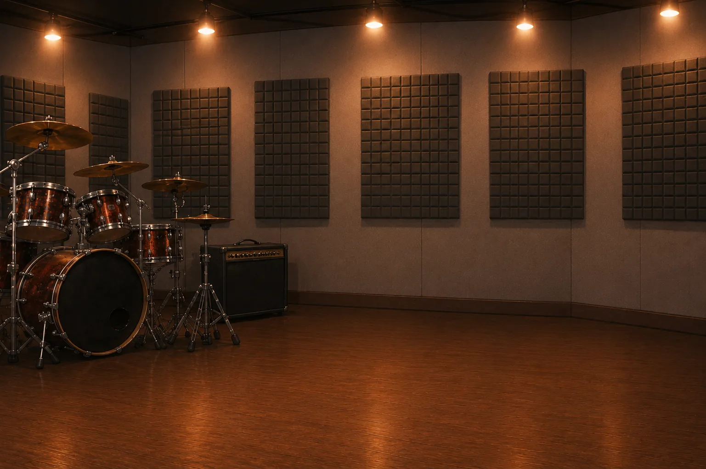
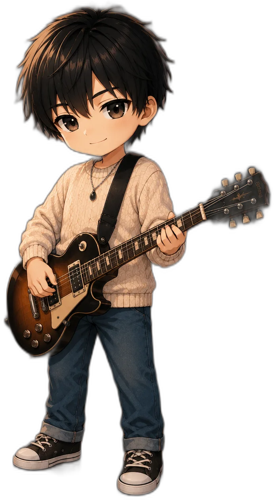
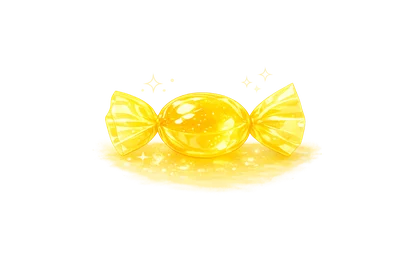

【残っている音】
夜のファミレスは、時間だけがゆっくりと流れているようだった。
窓の外はすでに暗く、街灯の光がガラスにぼんやりと滲んでいる。
店内には数組の客しかおらず、どの席も互いに干渉しない距離を保っていた。
注文を終え、料理が来るまでの、わずかな間。
冷房の風が一定のリズムで天井を撫で、
グラスの中で氷が、時折、乾いた音を立てる。
コウタは、そのグラスを指で軽く押した。
水面が揺れる。
わずかな波紋が広がり、すぐに収まる。
それを、もう一度繰り返す。
理由は特にない。
ただ、手を止めると、考えがまとまりすぎる気がした。
「最近さ、変な夢ばっかり見る気がして」
言葉は、静かに落ちた。
誰かに聞いてほしいわけでも、
はっきり伝えたいわけでもない。
ただ、黙っているには少しだけ重い。
「なにそれ」
ハヤテはストローを口にくわえたまま、顔も上げずに返す。
興味がないわけではないが、深く踏み込む気もない。
「同じ場所なんだよな、毎回」
コウタは視線を落としたまま続ける。
夢の中の風景を思い出そうとすると、
輪郭だけが先に浮かび、細部はすぐに溶けていく。
「知らないはずなのに、知ってる感じがしてさ」
言いながら、自分でも納得できていないことが分かる。
説明がつかないものを、
言葉にしようとしている感覚。
「疲れてんのかな……」
原因らしいものを一応置いてみる。
けれど、それで終わる話ではないことも、どこかで分かっている。
「夏だしな」
ハヤテはすぐに返す。
ヒナタは、窓の外を見たまま。
「まあ、あるかもな」
遅れて、短く返す。
「幽霊的なやつ？」
ハヤテが、軽く笑いながら言う。
「わかんない、なんか……」
コウタは言葉を切る。
一度、考えるのをやめるように。
それでも、残る感覚がある。
「音だけ残ってる、みたいな」
その瞬間、空気がわずかに止まる。
何かが起きたわけではない。
ただ、さっきまでと同じではない。
「霊感、強いとか？」
ハヤテが肩をすくめる。
「そういうの、ある？」
コウタは顔を上げないまま返す。
自分の言葉を、外側から確認するように。
「俺は多分ねえな」
ハヤテは短く言って、ストローを指で回す。
ヒナタは、すぐには口を開かない。
会話を受け取ってから、
ほんの一拍だけ遅れて考える。
何を言うかではなく、
どこまで言うかを測るような間。
「……見えてても、多分気にしない」
強くも弱くもない声。
ただ、揺れていない。
コウタが顔を上げる。
「どういう意味？」
今度は、はっきりと聞く。
ヒナタは少しだけ目を細める。
「気にした時点で、そっちに寄るだろ」
当たり前のことのように言う。
説明はない。
補足もない。
コウタの指が止まる。
グラスの中の水は、まだわずかに揺れている。
「……寄るって、なにに」
問いは小さいが、引っかかりは消えない。
ヒナタは答えない。
代わりに、グラスの縁に触れる。
指先で、水面をなぞる。
その動きはゆっくりで、無意識に近い。
波紋が消える。
ぴたりと、止まる。
それ以上、何も起きない。
音も、変化もない。
ただ、止まっただけ。
ヒナタは、その水面を一瞬だけ見ている。
確かめるみたいに。
それから、何もなかったように指を離した。
その動作を見て、コウタだけが、わずかに顔をしかめる。
理由は分からない。
分からないまま、残る違和感。
「なんか損してる気がする」
小さく息を吐く。
拾わない選択をしていることが、
何かを見逃している気がする。
「むしろ得だろ」
ハヤテがすぐに返す。
迷いなく。
「拾わなくていいもん、拾わないで済むし」
軽く言い切る。
そこに疑いはない。
コウタは曖昧に頷く。
納得はしていない。
けれど、否定もしない。
そのまま、もう一度グラスを見る。
さっき止まったはずの水面が、
ほんのわずかに、
遅れて揺れた気がした。
誰も触れていないのに。
【遅れてくる音】
コウタは、グラスから目を離した。
さっき見た揺れを、これ以上追わないように。
見続けてしまえば、理由を探してしまう気がした。
意味を与えた瞬間に、戻れなくなる。
一度だけ、ゆっくり瞬きをする。
「……気のせいだよな」
誰に向けたわけでもない声が、テーブルの上に落ちる。
「そういうのは大体、気のせいだろ」
ハヤテが軽く返す。
それで終わるはずの会話だった。
そこで切れていれば、何も残らなかったはずだった。
ヒナタが、グラスを置く。
小さく、乾いた音が鳴る。
その音が、ほんのわずかに遅れて聞こえた気がして、
コウタの肩が、無意識に強張る。
遅れた、というより、
あとから追いついてきたような感覚。
今の一瞬が、二重に重なったような。
ふと、視線が合う。ヒナタは、何も言わない。
「……なあ」
思わず口を開く。
止めるより先に、言葉が出る。
「さっきの音」
「さっき？」
ハヤテが首を傾げる。
反応はいつも通りで、
そこに引っかかりはない。
「いや……なんでもない」
言い切って、引っ込める。
口にした瞬間に、形になる気がした。
ヒナタは何も言わない。
ただ、テーブルの上を一度だけ指で叩く。
コツ、と音が鳴る。
短く、乾いた音。
今度は、ちゃんと一度だけ。
遅れも、重なりもない。
何もおかしくない。
何も起きていない。
はずなのに。
コウタの中にだけ、
さっきの違和感が残っている。
音が、少しだけ遅れて、
あとから追いついてくる感覚。
消えきらずに、
そこに留まっているみたいな。
「……やっぱ、変だわ」
小さく呟く。
「夢の続き、起きてても見てるみたいな感じする」
言葉にしても、ぴったりはこない。
それでも、近い形を選ぶしかない。
ハヤテは少しだけ黙る。
すぐに返さず、
コウタの様子を一度だけ見る。
「それ、寝不足じゃねえの」
軽く言う。
いつもの調子に戻しながら。
それ以上踏み込まないための言い方。
ヒナタが、ふとコウタを見る。
「……その夢」
声は低く、揺れない。
「終わるとき、どうなってるの」
コウタは少し考える。
記憶を手繰るように、ゆっくりと。
夢の終わりは、いつも曖昧で、
はっきり掴めたことがない。
「……わからない」
「気づいたら、終わってる」
言いながら、自分でも曖昧さをなぞる。
「でも、いつも」
そこで言葉が止まる。
引っかかりがある。
「なんだよ」
ハヤテが軽い調子のまま、続きを待つ。
コウタは少しだけ迷う。
言うほどのことかどうかを、一瞬だけ考えてから。
「最後、誰かいる気がする」
空気が、ほんのわずかに沈む。
静かに、重さだけが増える。
「顔は？」
「見えない」
即答だった。
「でも、音だけ残るんだよ」
さっきと同じ言葉。
同じ言い方。
繰り返されたことで、少しだけ輪郭が濃くなる。
ヒナタはそれを聞いて、
ほんのわずかに視線を落とす。
何かを考えたようで、
何も言わない。
そのまま、テーブルの上に残った水滴を指で払う。
小さな水の粒が、形を崩す。
音もなく、消える。
それを見て、コウタはふっと息を吐く。
理由は分からない。
ただ、張っていたものが少しだけ緩む。
「……やっぱ、損してる気がする」
さっきと同じ言葉を、もう一度口にする。
拾わないことのほうが楽だと分かっていても、
どこかで取りこぼしている気がする。
ハヤテが笑う。
「だから、得だって」
「気にしなきゃ、来ないもんもあるだろ」
あくまで軽く。
けれど、少しだけ様子を見ながら。
コウタは答えない。
言い返す言葉はあるのに、
それを選ばない。
ただ、グラスに手を伸ばして、
視界から外すように少しだけ遠ざける。
さっきの水面を、
もう一度見てしまうのを、避けるように。
【ずれている数】
別の日。
昼過ぎのファミレスは、夜とは違う種類の騒がしさで満ちていた。
家族連れの声、食器が触れる音、店員の足音。
どれも特別ではない。
どれも均一で、途切れない。
ひとつひとつを意識しなければ、ただの背景になる音。
コウタはドリンクバーの前に立つ。
カップを傾けて、氷を落とす。
カラン、と鳴る。
乾いた、はっきりした音。
それだけ。
遅れも、重なりもない。
そのことに、少しだけ安心する。
肩の力が抜ける。
余計なものは、何もついてこない。
席に戻ると、ハヤテがちょうどメニューを閉じるところだった。
「遅い」
顔も上げずに言う。
「混んでた」
コウタは適当に返す。
グラスをテーブルに置く。
音は、普通に鳴る。
ヒナタは窓の外を見ている。
昼の光をそのまま受け止めるように、
視線を動かさずに。
何も言わない。
何も拾っていないように見える。
「夢、まだ見る？」
ハヤテが何気なく聞く。
話題としては軽い。
昨日の続きというほどでもない調子。
コウタはストローに指をかける。
くるくると回す。
「……見てない」
一拍置く。
「多分」
その言い方に、自分でも引っかかる。
ヒナタは反応しない。
外を見たまま、
ほんの少しだけ視線を横に流す。
「多分ってなんだよ」
ハヤテが笑う。
「起きたとき、覚えてないだけかもしれない」
コウタはそれ以上続けない。
説明しようとすれば、
またあの感覚を引き寄せる気がした。
ストローを回す指だけが、
少しだけ速くなる。
「それ、終わったやつじゃねえの」
ハヤテが軽く言う。
「飽きたとか」
「そういうもんか？」
「大体そんなもんだろ」
コウタはグラスに口をつける。
氷が触れる。
冷たい。
普通だ。
温度も、音も、
どこにも違和感はない。
はずなのに。
一瞬だけ、音が遠くなる。
周りの声も、食器の音も、
ほんの少しだけ、後ろに下がる。
すぐに戻る。
何も変わらない。
今の一瞬があったことすら、
証明できないくらいに。
ヒナタがグラスを持つ。
音はしない。
持ち上げるときも、
置いたときも、鳴らない。
不自然ではない。
ただ、音がなかっただけ。
コウタはそれを見る。
何も言わない。
「なに」
ハヤテが気づく。
視線だけで問いかける。
「いや」
コウタは目を逸らす。
言葉にするほどのものじゃない。
言葉にした瞬間に、形になってしまう。
ヒナタはゆっくり水を飲む。
その動きは滑らかで、無駄がない。
見続ける理由がないのに、見続けてしまいそうになる。
「……やっぱさ」
ぽつりとこぼす。
「夢じゃなかった気がする」
自分でも、意味ははっきりしていない。
ただ、そういう言い方しかできない。
ハヤテが少しだけ眉を動かす。
「なにが」
「わかんないけど」
それ以上は続かない。言えない、の方が近い。
ヒナタがグラスを置く。
今度は、音が鳴る。
一度だけ。
遅れない。
重ならない。
ただ、それだけの音。
コウタはそれを聞く。
そのまま、自分のグラスには手を伸ばさない。
触れたくない理由は、はっきりしない。
店を出る。
外の空気は、少しだけ重い。
昼の明るさはそのままなのに、
音だけが薄い。
車の走る音も、人の話し声も、
どこか一枚遠い。
「帰る？」
ハヤテが軽く聞く。
「……うん」
コウタは短く答える。
それ以上の言葉は選ばない。
三人で歩き出す。
足音が揃う。
一定のリズム。
いつも通り。
そのはずなのに。
どこかで一歩だけ、ずれる。
わずかな違い。
気にしなければ、気づかない程度の。
誰も何も言わない。
ヒナタだけが、少し後ろを歩く。
距離を測るでもなく、
ただ自然に。何も気にしていない顔で。
交差点で止まる。
信号待ち。
車の音、人の声、風。
全部、普通にある。
コウタはそれを一つずつ確かめる。
聞こえているかどうかを、
確かめるみたいに。
大丈夫だと、思う。
思おうとする。
「なあ」
小さく声を出す。
「この前さ」
ヒナタは反応しない。
ただ、ほんの少しだけ視線を上げる。
「夢の話」
コウタは続ける。
「やっぱ、変だった」
ハヤテが横で「あー」とだけ返す。
「まだ引きずってんの？」
「……わかんないけど」
そこで言葉が止まる。
信号が変わる。
歩き出す。
横断歩道の白線を踏む。
一歩。
二歩。
三歩。
その間、
足音が、ひとつ多い気がする。
コウタは足を止める。
反射的に。
後ろを見る。
誰もいない。
「どうした」
ハヤテが振り返る。
「……いや」
コウタは首を振る。
言葉にするほどの確信がない。
また歩き出す。
今度は数えない。
数えないようにする。
ヒナタが横に並ぶ。
いつの間にか、前に出ている。
「気にするな」
短く言う。
コウタが顔を向ける。
「何を」
ヒナタは答えない。
そのまま前を見る。
少しだけ間を置いて、
「さっきの」
それ以上は続けない。
コウタは、何も返せない。
聞き返すこともできない。
ハヤテが軽く笑う。
「ほらな、考えすぎ」
いつも通りの調子。
それで会話は終わる。
終わるはずなのに。
コウタは一度だけ、後ろを見る。
さっきの場所。
横断歩道の白線。
何もない。
何もないのに。
踏んでいないはずの位置が、
ひとつだけ、わずかに濡れている気がした。
光のせいかもしれない。
見間違いかもしれない。
それ以上、確かめない。
ヒナタは振り返らない。
【手の中にあるもの】
その夜。
部屋は静かだった。
音がない、というより、
音が遠い。
窓は閉めている。
カーテンも引いている。
それでも、どこかで風の音がする。
隙間から入ってくるわけでもなく、
外の音として届くわけでもない。
ただ、そこにあるような音。
コウタはベースケースを壁に立てかける。
いつも通りの動き。
重さも、角度も、変わらない。
そのまま、ポケットに手を入れる。
鍵を出すつもりだった。
けれど、指先が止まる。
何かに触れる。
硬い。
小さくて、冷たい。
鍵とは違う感触。
ゆっくりと取り出す。
小さな石だった。
丸くて、少し黒い。
表面は滑らかで、
どこかだけ、わずかに欠けている。
「……なんで」
声は小さく、部屋に落ちる。
返ってくるものはない。
昼の店を思い出す。
テーブル。
グラス。
水面。
揺れていた光。
拾った覚えはない。
手に取った記憶もない。
ないはずなのに。
今、手の中にある。
しばらく見つめる。
意味を探そうとするほど、
何も見えてこない。
ただの石にしか見えない。
それ以上でも、それ以下でもない。
コウタは視線を切る。
それ以上考えないように。
テーブルに置く。
軽い音がする。
乾いた、小さな音。
それだけ。
それ以上は、何も起きない。
はずなのに。
部屋の音が、一段落ちる。
もともと静かだったはずの空間が、
さらに奥に沈む。
コウタは、石から目を外す。
見続けていると、
何かが起きる気がした。
理由はない。
ただ、そういう感覚だけがある。
スマホが震える。
短い振動。
現実の音。
それだけで、少しだけ意識が戻る。
画面を見る。
ヒナタからだった。
『帰った？』
短い文字。
余計な言葉がない。
『今』
コウタはすぐに返す。
既読がつく。
少しだけ間が空く。
その間が、やけに長く感じる。
『大丈夫？』
コウタは、石を見ない。
視界の端にも入れないようにする。
見ないまま、
『うん』
と打つ。
少しも迷わず、送る。
『ならいい』
それ以上は、来なかった。
来ないことが、少しだけ重い。
コウタはスマホを置く。
部屋を見渡す。
壁。
机。
ベースケース。
いつもと同じ配置。
何も変わっていない。
テーブルの上も、同じ。
さっきと同じはず。
同じはずなのに。
石の位置だけが、少し遠く感じる。
触っていない。
動かしていない。
置いたときの距離は覚えている。
それなのに、
今の方が離れて見える。
視線の問題かもしれない。
気のせいかもしれない。
コウタは近づかない。
確かめようとしない。
確かめた瞬間に、
何かが変わる気がした。
そのとき。
窓ガラスに、何かが映る。
黒い影。
一瞬だけ。
自分の動きとは、少しずれた位置。
コウタは振り返る。
反射的に。
何もいない。
空気も、配置も、変わらない。
もう一度、窓を見る。
自分だけが映っている。
それ以外は、何もない。
コウタは、石を見ない。
見ないまま、電気を消す。
部屋が暗くなる。
輪郭が溶けて、
物の境目が曖昧になる。
そのまま、動かない。
音を待つわけでもなく、
ただ、そこにいる。
暗くなったあとで。
さっき置いたはずの音が、
もう一度だけ、
遅れて鳴った気がした。
【触れないまま】
三人で店に入る。
外の光がそのまま流れ込んで、店内はやけに明るかった。
昼の空気が残ったまま、甘い匂いだけが重なっている。
ショーケースの前に並ぶ。
ガラスの中には、整えられたケーキが並んでいる。
白いクリームは均一で、
果物の色は不自然なくらい鮮やかで、
どれも同じように綺麗に見える。
触れなければ崩れない形。
選ばれなければ、そのまま残り続ける形。
「甘いのいく？」
ハヤテの声は軽い。
コウタは一瞬だけ止まる。
ほんのわずかな間。
言葉は決まっているのに、
その前に、何かを確かめるような時間が入る。
視線が、ガラスに触れる。
自分の姿が映る。
少し歪んだ輪郭。
光に滲んだ色。
その後ろに、
黒い影がある。
「ヒナ……タ……？」
無意識に、名前が出る。
けれど、すぐに違うと分かる。
輪郭が、わずかにずれている。
立ち方が違う。
重心の置き方が違う。
余計な力がどこにも入っていない。
整いすぎている。
ヒナタではない。
自分とも、少し違う。
「先、座ってるわ」
ハヤテが軽く言う。
ヒナタも何も言わずに動く。
二人はそのまま離れていく。
振り返らない。
コウタだけが、その場に残る。
「どれにしますか？」
店員の声。
近くで聞こえているはずなのに、
一瞬だけ距離がある。
コウタは視線を外す。
見続ける理由がないのに、
見続けてしまいそうになるから。
「……これで」
適当に指をさす。
名前は見ていない。
味も考えていない。
決めるという行為だけを終わらせる。
注文を伝え、支払いを済ませる。
トレイを受け取る。
手に重さが乗る。
それで、少しだけ現実に戻る。
顔を上げる。
ショーケースのガラスは、よく磨かれていた。
照明が柔らかく反射して、
ケーキの輪郭がわずかに滲んでいる。
その中に、自分が映る。
――そのはずだった。
少しだけ、違う。
光のせいだと思う。
角度の問題だと思う。
視線を動かす。
それでも、変わらない。
向こうの自分は、そこにいる。
黒い髪のまま、静かに立っている。
揺れていない。
こちらの呼吸とは関係なく、
別の時間で立っているみたいに。
店内には音がある。
フォークの触れる音。
小さな笑い声。
ガラスケースを開け閉めする、軽い金属音。
全部、ちゃんと聞こえている。
なのに。
向こう側だけ、少し遠い。
ガラス一枚のはずなのに、
そこだけ音が届いていない。
目が合う。
逸らさない。
こちらが外すまで、
ずっと。
そのまま、口が動く。
何かを言っている。
音はない。
聞こえない。
それでも、
意味だけが落ちてくる。
――それで、よかったの？
言葉として聞いたわけではない。
それでも、確かに理解できてしまう。
指先に、わずかに力が入る。
トレイが、ほんの少し揺れる。
皿が、かすかに触れる。
その音で、意識が戻る。
瞬きをする。
そこには、いつもの自分がいる。
赤い髪。
少しだけ崩れた立ち方。
トレイの重さを、ちゃんと受けている手。
「コウタ？」
少し離れた席から、ハヤテの声。
現実の距離。
顔を上げる。
手を振っている。
ヒナタは、すでに座っている。
何も変わっていない位置に。
コウタは一度だけ、ガラスを見る。
何もいない。
ただの反射。
それ以上でも、それ以下でもない。
そのまま歩き出す。
席に着く。
トレイを置く。
フォークを持つ。
動作はすべて、いつも通り。
甘い匂いも、
周りの音も、
全部、同じ。
何も変わっていない。
はずなのに。
さっきの言葉だけが、
どこにも消えずに残っている。
声だけが、まだ、内側に残っていた。
【選ばなかった方】
地方の商店街は、夕方を過ぎると急に静かになる。
昼のざわめきが、そのまま抜け落ちたように消えて、
通りには閉まりかけのシャッターと、点々と残る明かりだけが並んでいた。
人の気配が薄くなるほど、音は整理されていく。
遠くで何かが動く音。
看板が風に触れる音。
そして、足音だけが、やけに近くなる。
三人で歩いているはずなのに、
そのリズムがどこかで引っかかる。
揃っているようで、わずかに噛み合っていない。
ほんの半拍だけ、ずれている。
意識しなければ気づかない程度の、
けれど一度気づくと無視できないズレ。
コウタは、それを気のせいだと思った。
考えても仕方のない違和感だと、
意識の外へ押し出そうとする。
こういうものは、拾った時点で形になる。
形になれば、消えなくなる。
それでも、完全には消えないまま残る。
足の裏に、ほんのわずかに引っかかる感覚。
靴紐が解けていることに気づき、
コウタは一歩だけ遅れる。
「……ちょっと待って」
そう言ってしゃがみ込み、紐を結び直す。
見慣れた靴。
見慣れた動作。
何度も繰り返してきたはずなのに、
指に伝わる感触が、ほんの少しだけ遠い。
紐のざらつき。
締めたときの抵抗。
どれも確かにあるはずなのに、
一枚、何かを挟んで触れているような鈍さがある。
結び終えて軽く引く。
いつもなら、そこで「締まった」と分かるはずなのに、
その確かさが、どこか曖昧だった。
顔を上げようとしたとき。
どこかで、小さく鈴が鳴った気がした。
「迷っているな」
すぐ横から声がした。
距離の感覚が、一瞬だけ崩れる。
近い。
近いはずなのに、
そこに至るまでの過程が抜けている。
振り向くと、そこに人が立っている。
さっきまで何もなかった場所に、
影と同じ濃さで、自然に混ざるように存在していた。
最初からいたみたいに。
輪郭がはっきりしない。
光の中にあるのに、
どこかだけ光を受けていない。
コウタはゆっくり立ち上がり、
無意識に半歩だけ距離を取る。
その半歩で、ようやく呼吸が戻る。
「……なんですか」
声は出たが、
自分のものではないみたいに少し遅れる。
相手は答えない。
ただ、手を持ち上げる。
二枚のカードが差し出される。
裏返されたままのカード。
揃っているはずなのに、
ほんのわずかに位置がずれている。
左右で、呼吸が違うみたいに。
「そろそろ、選ぶか」
押しつけるでもなく、
ただそこに選択だけを置く声だった。
強制はない。
けれど、逃げ道もない。
コウタはカードを見る。
どちらも同じに見える。
違いはわからない。
裏返されているせいなのか、
それとも本当に差がないのか、判断がつかない。
どちらかを選べば、何かが決まる。
理由もなく、そう思う。
それは当たり外れではない。
もっと、戻れなくなる方向の選択。
選んだあとでは、
選ばなかった方に戻れなくなる感覚。
――確かに、迷っている。
今も。
それ以前から、ずっと。
安定か。
それとも、戻れない方か。
言葉にした瞬間に、
どちらかへ傾いてしまいそうで、
コウタはその先を考えないようにする。
それでも。
指先だけが、わずかに前へ出る。
体より先に、選ぼうとしている。
周りの音が、少し遠い。
ハヤテとヒナタの足音も、
もう聞こえない。
自分の呼吸だけが、やけに近い。
さっきまで歩いていた道の続きなのに、
ここだけ切り取られて、
別の時間に置かれているみたいだった。
ほんの一瞬。
指先がカードの縁に触れる。
冷たい。
硬い。
確かに、そこにある。
「コウタ！」
少し先からハヤテの声が飛ぶ。
現実の音だった。
一気に距離が戻る。
空気がつながる。
音が流れ込む。
コウタはハッとして、すぐに手を引く。
何も持っていない。
何も選んでいない。
――そのはずだ。
「……やめとく」
短く言って、その場を離れる。
足を踏み出した瞬間、
さっきまで止まっていた時間が、
遅れて動き出したような感覚があった。
通りの空気が戻る。
遠くでシャッターの下りる音がして、
どこかの店先から、微かな話し声が流れてくる。
さっきまでなかったはずの音が、
何事もなかったみたいに並び始める。
それでも。
一度切り離された感じだけが、
うまく戻らないまま残っている。
コウタは二人の背中を追う。
歩き出してから、数歩で追いつくはずだった。
けれど、その数歩がわずかに長く感じられる。
距離が、少しだけ伸びている。
詰めても、ぴたりと揃わない。
半歩分のズレ。
そのまま残り続ける距離。
そのとき、ポケットに小さな違和感を覚える。
布越しに、指先に触れる硬さ。
覚えのある感触。
コウタは、そこで初めて思い出す。
取り出す。
掌の上に、重さが乗る。
小さな黒い石が、そこにあった。
何も選ばなかったはずなのに、
何かだけが、まだ残っていた。
【呼ばれる方】
コウタは、わずかに歩幅を上げる。
さっきまで遠く感じていた二人の背中に、
少しずつ距離が詰まっていく。
数歩で追いつくはずの距離。
それなのに、
踏み出した分だけ、ほんの少しだけ遠くなる。
目に見えるほどではない。
けれど、確かに揃わない。
半拍だけ、遅れる。
それでも、もう一歩踏み出す。
もう一歩。
その繰り返しで、ようやく距離が揃う。
コウタは二人の横に並ぶ。
呼吸も、足音も、
今度はちゃんと重なる。
リズムが戻る。
さっきまでのズレが、なかったことになる。
――はずだった。
その瞬間。
ヒナタがふと、足を止める。
振り返るわけでもなく、
前を見たまま。
動きだけが、切り離される。
「……鳴ってる」
小さな声だったが、
空気の流れがそこで止まる。
音の重なりが、わずかにほどける。
「なにが」
コウタが聞き返す。
さっき揃ったはずの呼吸が、
またわずかにずれる。
ヒナタはすぐには答えない。
聞いているというより、
確かめている間。
「音」
「またそれ？」
ハヤテが軽く笑う。
空気を戻すような言い方。
ただ、少しだけ足が遅れる。
一瞬だけ、止まりかけて。
それでも、完全には止まらない。
「……そっち」
ヒナタは言い切らないまま、前へ進む。
「おい」
コウタは思わず声をかける。
ヒナタは振り返らない。
距離は近いはずなのに、
どこかで噛み合わない。
手を伸ばせば届くはずの距離。
それなのに、
指先だけが少し足りない。
「ヒナタ」
声を重ねる。
音は届いているはずなのに、
届いた実感がない。
空気の中で、一度薄くなる。
「待てって」
歩幅を上げる。
追いつこうとする。
それでも、距離は一定のまま。
コウタは一瞬だけ迷い、後ろを振り返る。
「……ハヤテ」
距離は変わっていない。
呼べば届く位置。
それなのに、
視線が一度だけコウタの横を通り過ぎる。
何もないはずの場所を、
確かめるように。
ほんの一瞬だけ。
そこから遅れて、目が合う。
何事もなかったみたいに、
ハヤテは笑う。
「ん？」
いつも通りの声。
コウタは、何も言えない。
言葉にした瞬間に、
今の違和感が確定してしまいそうで。
ヒナタはすでに路地に入っている。
見覚えのない道。
明かりは少なく、
奥にいくほど暗くなる。
足音だけが残る。
不揃いなまま。
ヒナタは一つの店の前で止まる。
「……ここ」
確認するでもなく、
ただ辿り着いた場所みたいに。
そのまま扉に手をかける。
「おい――」
言いかけたところで、扉が開く。
鈴が鳴る。
小さく、乾いた音。
ひとつだけ。
ハヤテが笑う。
「行くか」
軽い声。
いつもと変わらない調子で、
そのまま中へ入っていく。
コウタは一拍だけ遅れる。
扉をくぐる。
鈴が鳴る。
さっきと同じ音。
そのあとで、
わずかに遅れて、もう一度鳴る。
ヒナタは止まらない。
足を緩めることもなく、
まっすぐ奥へ進んでいく。
店の中は静かだった。
外の通りとは切り離されたみたいに、音がひとつずつ薄く、遠い。
床を踏む感触だけが残る。
奥に、人。
視界の中に入っているのに、
存在として結びつくまでに遅れがある。
最初は輪郭が曖昧で、
そこに"いる"と認識するまでに、わずかな間があった。
ヒナタが、止まる。
その瞬間、空気がわずかに締まる。
「珍しい客だ」
静かな声。
ヒナタはすぐには答えない。
聞き返すでもなく、
否定するでもなく、
一拍だけ、間を置く。
その間に、何かを測っているように。
「……鳴ってる」
小さく言う。
確信ではない。
けれど、迷いもない。
店主はゆっくり頷く。
「そうか」
それだけ。
説明も、驚きもない。
最初からそこにあった流れを、
ただ受け取るみたいに。
ヒナタの視線が、ゆっくり動く。
視線の先が、先に決まっているみたいに。
棚の一角で止まる。
青い石のついたネックレスが、
光を受けて、わずかに揺れている。
ヒナタは動かない。
時間が、わずかに遅れる。
それから、
遅れて手が伸びる。
「……これだ」
確かめるように言う。
誰に向けるでもなく、
ただ言葉として落とす。
ヒナタは石を覗き込む。
距離を詰める。
近づけば分かると知っているみたいに。
コウタには、何も聞こえない。
店の中は静かなまま。
空気も、音も、
どこにも変化はない。
ただ、ヒナタだけが、そこに何かを受け取っている。
店主が静かに言う。
「気に入ったかい」
ヒナタは、否定も肯定もしない。
ただ、手にしたまま動かない。
離す理由がないように。
「持っていくといい」
店主の声は変わらない。
強制はない。
けれど、選択肢もない。
ヒナタは頷かない。
返事もしない。
それでも。
そのまま受け取る。
決めたわけではない。
けれど、もう決まっているみたいに。
【揃ってしまうもの】
店主の視線が動く。
ゆっくりと、迷いなく、
ハヤテの方へ向く。
選ばれているというより、
順番が最初から決まっているみたいに。
「……俺も？」
ハヤテは少しだけ手を止める。
迷っているようで、
その実、どこかで決まっているような間。
視線が一度だけ止まる。
黄色い石のついたシンプルなピアス。
「これかな」
店主は何も言わない。
肯定も否定もない。
その沈黙が、
それでいいという合図みたいにそこにある。
最後に、視線が動く。
コウタの方へ。
逃げ場を残さない速度で。
コウタは動かない。
棚も見ない。
視線を向ければ、
何かを選んでしまう気がした。
それでも、銀色のリングが目に留まる。
他のものと違って、
選ばれずに残った形。
石が外れ、中央にはくぼみだけ。
何かがあった痕跡だけが残っている。
「いくらですか？」
ハヤテが聞く。
現実に引き戻すような声。
「もう受け取っている」
店主が言う。
静かに、確定だけを置く声。
ハヤテがコウタを見る。
コウタは首を振る。
そんな覚えはない。
払った記憶も、
差し出したものも、思い当たらない。
「さっき、触れただろう」
その声を、どこかで聞いた気がした。
店主がリングを差し出す。
ゆっくりと。
逃げられない距離まで。
コウタは手を出さない。
視線だけがリングに落ちる。
触れていないのに、指先に感触が浮かぶ。
冷たさ。
わずかな硬さ。
思い出すというより、
そこに残っている感覚。
もう一度、差し出される。
距離が、ほんのわずかに縮まる。
コウタは躊躇う。
小さな重みが、少し遅れて掌に乗ってくる。
今、受け取ったのだと、あとから理解する。
「これで、揃う」
「……あ」
ポケットの中の、黒い石。
リングの、何かを待っているような、くぼみ。
指先が、確かめるように力を込める。
カチリ、と小さな音がした気がした。
ほんの一瞬、店主と視線が合う。
「……選んだな」
その言葉は、
誰に向けたものでもないみたいに落ちる。
終わりを告げるでもなく、
始まりを示すでもなく、
ただ、区切りだけがそこにある。
リングは、指にピタリとはまる。
さっきまで空だったくぼみに、
黒い石がはまっている。
隙間がない。
違和感がない。
最初からそこにあったみたいに、
指に馴染んでいる。
ハヤテが笑う。
「いいじゃん」
軽く言う。
「揃ってる」
その言葉に、迷いはない。
外に出ると、夜はさらに静まり返っていた。
さっきまであったはずの音が、
一段奥へ引いたように遠い。
三人で歩く。
足音が一定のリズムを刻む。
今度は揃っている。
ずれていない。
ヒナタが、ふと立ち止まる。
ほんの一瞬だけ。
確かめるみたいに。
それから、何もなかったみたいに歩き出す。
コウタはその横顔を見る。
ヒナタの指が、無意識に何かをなぞっている。
弦の上をなぞるみたいに。
音は出ていない。
けれど、動きだけが、はっきりと形になっている。
ヒナタの胸元には、青い石が光る。
わずかに揺れる。
呼吸とは別のリズムで。
コウタは、目を逸らす。
それ以上は見ない。
【最初からあった音】
スタジオは、いつも通りの明るさだった。
外の時間とは関係なく、
同じ温度で保たれている空間。
昼でも夜でも変わらない光。
窓のない箱の中で、時間だけが切り離されている。
アンプの電源音と、
わずかな機材のノイズだけが、静かに流れている。
コウタは、ケースからベースを出す。
ストラップをかける。
位置を整える。
何度も繰り返してきた動作。
迷いも、引っかかりもない。
弦を軽く弾く。
一音。
音は、いつも通り。
太さも、伸びも、変わらない。
何も変わっていない。
変わっていないはずの場所。
扉が開く。
ヒナタが入ってくる。
足音は小さい。
それでも、空気がわずかに動く。
何も言わない。
視線も合わせない。
コウタの方を見ないまま、
そのままギターを手に取る。
ストラップをかける。
チューニングもそこそこに、指を置く。
準備というより、
すでに続きに入っているみたいな動き。
ほんの一瞬だけ、止まる。
それから、弾く。
一音。
空気が、わずかに変わる。
音の輪郭が、
ほんの少しだけ、前に出る。
コウタの指が止まる。
今の音。
聞いたことがないはずなのに、
知っている。
どこで、ではない。
いつかでもない。
ただ、そこにあったものを、
今、触れた感覚。
ヒナタは止まらない。
そのまま続ける。
フレーズが繋がる。
流れていく。
迷いがない。
作っている音ではない。
なぞっている。
すでに置かれていたものを、
順番に拾い上げているだけのように。
コウタは、音を追う。
合わせる。
考える前に、指が動く。
自然に、合ってしまう。
初めてのはずなのに、
ズレない。
合わせようとする余地がない。
そのことの方が、違和感になる。
遅れて、ハヤテが入ってくる。
耳には、黄色い石のピアスが光っている。
光を受けて、わずかに揺れる。
「お、始まってる？」
いつもと変わらない調子。
スティックを回しながら、
そのまま椅子に座る。
ヒナタの音を聞く。
一拍だけ、間。
何かを測るような短い沈黙。
それから、何でもない顔で入る。
リズムが乗る。
重なる。
揃う。
あまりにも自然に。
三人の音が重なる。
その瞬間。
コウタは、わずかに指を止める。
何かが、噛み合いすぎている。
ベースでもない。
ギターでもない。
ドラムでもない。
どれにも当てはまらない。
それでも、どれにも外れていない。
音の隙間が、埋まっている。
本来なら残るはずの空白が、
最初からなかったみたいに消えている。
呼吸の余白。
間の余白。
それが、存在していない。
数えようとする。
三つ。
はずなのに。
どこかで一つ分だけ、
厚みがずれている。
増えているわけではない。
減っているわけでもない。
ただ、合っていない。
はっきりとは掴めない。
それでも、消えない。
曲が終わる。
余韻だけが残る。
音は止まっているのに、
空気の中にはまだ続きがある。
誰もすぐに動かない。
時間が少しだけ遅れる。
ハヤテが、ふっと笑う。
「いいじゃん」
軽い声。
「なんか、最初からあったみたい」
その言い方が、少しだけ正しい。
コウタは、何も言わない。
ヒナタを見る。
ヒナタは、指を止めたまま、
弦の上に手を置いている。
さっきと同じ位置。
わずかに、なぞる。
音は出ない。
でも、そこにまだ続きがあるみたいに。
触れれば鳴る、ではなく、
もう鳴っているものに触れているような動き。
コウタは、視線を落とす。
自分の手。
弦。
その先。
ポケットの中のリングが、
わずかに重い。
存在を主張するでもなく、
ただ、そこにある重さ。
あのとき、選ばなかったはずのもの。
それでも、持っている。
外した覚えも、しまった覚えもないのに。
「タイトルどうする？」
ハヤテが言う。
軽い調子で。
いつもの流れの中で。
ヒナタは、少しだけ間を置く。
「……まだ」
短く言う。
コウタは、その言葉を聞いて、
わずかに息を止める。
まだ、ではない。
たぶん。
そのとき。
スタジオの外を、誰かが歩く音がする。
足音。
一定のリズム。
コツ、コツ、と続く。
一拍、遅れて。
何かが、重なる。
同じリズムで、
少しだけ遅れて。
重なったはずなのに、
数えると合わない。
コウタだけが、顔を上げる。
音の方へ視線を向ける。
誰も気にしない。
ヒナタはギターを持ったまま。
ハヤテはスティックを回している。
外の音と、中の音。
本来なら分かれるはずのものが、
切れていない。
境目がない。
つながっている。
コウタは、何も言わない。
言えば、形になる気がした。
ただ、もう一度だけ弦に触れる。
さっきの音をなぞる。
ぴたりと合う。
ズレない。
最初から、そこにあったみたいに。
外の足音は、まだ続いている。
中の音と、同じ距離で。
区別がつかない。
つかないまま、重なっている。
【揃いすぎる音】
会場は、それほど大きくない。
天井も低く、音が逃げにくい箱だった。
壁に当たった音が、そのまま戻ってくる。
人の熱も、呼吸も、照明の温度も、狭い空間の中に少しずつ溜まっていく。
客のざわめきは、始まる直前になると、自然にひとつにまとまっていく。
笑い声。
小さな話し声。
足元で何かを動かす音。
ばらばらだったはずのものが、開演が近づくにつれて、少しずつ同じ方向を向く。
その流れは、いつもと同じだった。
特別な日ではない。
ただの一本。
ただのライブ。
ステージに上がる。
照明が落ちる。
暗転の中で、機材のランプだけが浮かぶ。
ヒナタは何も言わない。
ギターを持ったまま、いつもと同じ位置に立つ。
その立ち方は静かで、余計な力がない。
けれど、今日は少しだけ、そこに置かれているようにも見える。
コウタはベースを構えながら、一度だけ客席を見る。
暗くて、顔はよく見えない。
それでも、そこに"いる"数だけはわかる。
熱。
視線。
息をひそめる気配。
その密度が、いつもより少しだけ揃っている気がした。
最初の曲に入る。
いつも通り。
問題はない。
音も、流れも、すべて予定通りに進む。
ベースの位置も、ドラムの入りも、ギターの鳴りも、何も外れていない。
むしろ、よく合っている。
それが、少しだけ気になる。
数曲終わって、短い間が空く。
ハヤテがスティックを軽く回す。
「次、新しいやついく？」
軽い声。
観客には聞こえていない、三人だけの距離の声。
ヒナタは、わずかに頷く。
コウタは何も言わない。
でも、わかっている。
あの曲だ。
ヒナタが、指を置く。
あの日と同じ場所に。
ほんの一瞬、止まる。
考えている間ではない。
迷っている間でもない。
そこにあるものを、もう一度確かめるような間。
それから。
一音。
空気が、わずかに揃う。
音が広がるより先に、空間の方が整う。
客席のざわめきが、一拍分だけ遅れる。
それから、消える。
静かになったのではない。
揃ったのだと、コウタは思う。
弾きながら、客席の方を見る。
暗い。
でも、見える。
動きが、揃っている。
揺れ方。
呼吸。
視線。
全部が、同じタイミングで止まっている。
誰か一人ではない。
全体が、そうなっている。
ハヤテが入る。
リズムが重なる。
ぴたりと合う。
いつも以上に、正確に。
その正確さに、わずかに引っかかる。
合いすぎている。
ズレがない。
いつもなら、ほんの少しだけ残る揺れがある。
人が鳴らしているからこその、遅れや癖がある。
それが、今日は見つからない。
なのに。
数えようとすると、どこかで合わない。
三人のはずなのに、厚みだけがひとつ分ずれている。
増えているわけではない。
誰かが足されているわけでもない。
それでも、音の奥に、もう一枚ある。
はっきりとは掴めない。
それでも、消えない。
観客はそれを、違和感としてではなく、完成した音として受け取っている。
曲が進む。
止まらない。
ヒナタは迷わない。
最初から最後まで、すでに決まっているみたいに弾く。
その横顔に、表情はほとんどない。
ただ、指だけが動いている。
どこかから流れてくる音を、遅れずに拾っているみたいに。
コウタは、それに合わせる。
合わせられてしまう。
考える前に、指が動く。
どこにもズレがない。
サビに入る。
その瞬間。
客席の奥で、わずかに動くものがある。
人の動きではない。
けれど、そこに"立っている"。
客の隙間に紛れているのではなく、客席そのものの奥に重なっている。
ただ、いる。
コウタは目を逸らす。
見ない。
見れば、変わる気がした。
見なければ、まだ何も起きていないことにできる。
曲が終わる。
音が止まる。
余韻だけが残る。
その余韻が、少しだけ長い。
消えきらない。
アンプのノイズとも違う。
会場の反響とも違う。
音が終わったあとに、まだ音の形だけがそこに残っている。
拍手が起こる。
タイミングが、揃いすぎている。
一斉に始まり、一斉に止む。
誰かが合わせているわけではないのに、全部が同じ動きをする。
その正しさが、少し怖い。
ハヤテが笑う。
「いいじゃん」
軽い声。
「今日、めっちゃ揃ってる」
ヒナタは何も言わない。
ギターを持ったまま、指をわずかに動かす。
音は出ていない。
でも、まだ続きがあるみたいに。
弦に触れていないのに、そこだけが鳴っているみたいに。
コウタは、客席を見る。
さっきまであったはずの違和感が、もう見えない。
最初からいなかったみたいに、消えている。
暗い客席。
揃った視線。
整った沈黙。
何もおかしくない。
おかしくないことが、いちばん引っかかる。
ポケットの中のリングが、重い。
あの日と同じ重さ。
それ以上でも、それ以下でもない。
ただ、外せない重さ。
コウタは、小さく息を吐く。
違和感は、残ったまま。
それでも、
もう、外せない。
【残り続ける音】
ライブのあと、スタッフから映像データが共有された。
終演後の、いつも通りの流れ。
特別なことは何もない。
固定カメラの映像。
ライン録りの音。
現場で起きたことを、そのまま閉じ込めた記録。
ただ、それだけのはずだった。
コウタは自宅でそれを流す。
部屋は静かで、外の音もほとんど入らない。
壁に囲まれた、音が逃げない空間。
さっきまでいたライブハウスと、どこか似ている。
再生ボタンを押す。
わずかなクリック音。
それを合図に、画面が切り替わる。
映像が始まる。
ステージ。
照明。
客席。
すべて、見慣れた光景。
見てきたものと、ほとんど同じ。
最初の数曲は問題なかった。
音も映像も、
違和感はない。
バランスも良い。
ミスもない。
普通に、良い出来だと思う。
そのまま流す。
時間が進む。
例の曲に入る。
一瞬だけ、
画面の明るさが揺れる。
ほんのわずか。
気のせいで済ませられる程度の変化。
コウタは何も操作しない。
そのまま見る。
音が入る。
最初の一音。
コウタの指が止まる。
スピーカーから鳴っているはずなのに、
部屋の空気の方が、先に変わる。
音が届く前に、
空間がそれを受け入れているような感覚。
続く。
フレーズが流れる。
スタジオで弾いたときと同じ。
ライブで感じたものと同じ。
違和感も、そのまま。
音の奥に、もう一枚ある。
数えようとする。
三人。
のはずなのに。
どこかで一つ分だけ、厚みが合わない。
増えているわけではない。
それでも、重なっている。
消えていない。
全部と噛み合っている。
そのこと自体が、少しだけおかしい。
コウタは、再生を止めようとして、
指を止める。
画面の端。
客席の奥。
暗いままのはずの場所に、
一つだけ、形がある。
人影。
動かない。
観客の誰とも重ならない位置。
それなのに、そこに"いる"。
誰も気づいていない。
最初から背景の一部だったみたいに。
顔は見えない。
距離もある。
それでも。
姿勢だけが、やけにわかる。
無駄がない。
揺れない。
ブレがない。
ただ立っているだけで、
全部が揃っている。
コウタは、少しだけ目を細める。
画面の光が変わる。
見え方が、わずかにずれる。
髪の色。
黒い。
照明の反射ではない。
影の落ち方でもない。
その色だけが、
他と混ざらずに残っている。
動きがない。
呼吸の揺れもない。
それでも、
そこにいる。
画面の中の音と、完全に重なっている。
映像の外ではなく、
音の中に立っているみたいに。
コウタは、視線を逸らせない。
そのまま、
無意識に手が動く。
髪に触れる。
整えるように、軽くなぞる。
いつもの癖。
指先の感触が、少しだけ違う気がする。
髪の流れ。
触れたときの抵抗。
わずかに、ずれている。
そこで、止まる。
ゆっくりと手を下ろす。
もう一度、画面を見る。
同じ映像が流れている。
人影は、動いていない。
最初からそうだったみたいに。
変化はない。
何も起きていない。
はずなのに。
コウタは、再生を止める。
画面が暗くなる。
光が消える。
部屋が静かになる。
何も鳴っていない。
スピーカーも、空気も、止まっている。
はずなのに。
さっきの音が、残っている。
頭の中ではない。
記憶でもない。
空間のどこかに、そのまま続いている感じがする。
音が消えきらずに、
そこに留まっている。
コウタは、ゆっくりとポケットに手を入れる。
リングの石に触れる。
指先に、重さが返ってくる。
冷たいはずなのに、
わずかに温度がある。
体温とも違う、残り方。
あの日と同じ重さ。
変わっていない。
それなのに、
少しだけ馴染んでいる。
スマホに通知が入る。
短い振動。
現実の音。
ハヤテからだった。
「さっきの映像見た？」
少し間があって、もう一通届く。
「なんかさ」
そこで一度切れる。
入力の途中で止まったみたいに。
それから。
「音、いい感じに増えてない？」
コウタは、画面を見たまま止まる。
指も、呼吸も、そのまま。
返信はしない。
できない。
何を返せばいいのか、
言葉が浮かばない。
部屋は静かだ。
何も変わっていない。
机も、壁も、光も、
すべてそのまま。
それでも。
音は、まだ続いている。
消えていない。
終わっていない。
【揃いきる前】
音は続いている。
揃っている。
ズレない。
それはもう、確認するまでもない。
コウタは、ゆっくりと視線を上げる。
ドアの方。
さっき見えた影。
もう一度、確かめるみたいに。
ノブが、わずかに動く。
開く。
スタッフが顔を出す。
「すみません、次――」
そこで言葉が止まる。
一瞬だけ、視線がコウタの横にずれる。
ほんのわずかに。
それから、自然に戻る。
「……あ、大丈夫です」
何もなかったみたいに続ける。
ドアが閉まる。
音が、ぴたりと合う。
コウタは動かない。
今の視線。
ズレていた。
確実に。
自分を見ていなかった。
その隣。
そこに、何かがある前提で。
コウタは、ゆっくりと横を見る。
黒い髪。
立っている。
さっきと同じ距離で。
同じ姿勢で。
同じ高さで。
そこにいる。
消えない。
反射ではない。
音の中でもない。
ただ、そこにいる。
コウタは、息を止める。
理解が、少し遅れて追いつく。
――見えている。
自分だけじゃない。
普通に。
最初からいたみたいに。
ヒナタは止まらない。
ハヤテも、何も変わらない。
音はそのまま続く。
揃っている。
黒い方も、同じように弾いている。
コウタと、同じ音を完全に重ねて。
ゆっくりと視線を落とす。
自分の手。
弦の上。
その隣。
もう一つの手が、同じ位置にある。
触れている。
先に。
正確に。
コウタは、何も言わない。
言えない。
そのまま、音をなぞる。
ぴたりと合う。
ズレない。
もう、
どちらが弾いているのか分からないまま。
【最初から、そうだったみたいに】
音は、止まらない。
コウタの指が動く前に、
次の位置がそこにある。
それはもう、確かめるまでもない。
ヒナタは変わらず弾き続けているし、
ハヤテも、止めずにリズムを刻んでいる。
いつも通りのはずの時間。
それでも、
コウタの中だけが、わずかに遅れている。
ほんの半拍。
その遅れを埋めるように、
もう一つの動きが先にある。
視線を上げる。
アンプの反射。
黒髪の自分。
同じ高さで、同じ姿勢で、
そこに立っている。
消えない。
コウタは、何も言わない。
ただ、その動きを見る。
一度だけ指を止める。
止めたはずの音が、止まらない。
そのまま続いている。
わずかに。
でも、確かに。
ヒナタは止まらない。
ハヤテも止めない。
音は欠けない。
むしろ、
さっきよりも整っている。
コウタは、自分の手を見る。
動いていない。
それでも音は揃っている。
そこで、分かる。
――逆だ。
自分が遅れているんじゃない。
あれが、先にある。
揺れのない方。
迷いのない方。
選ばなかった方。
それに、
自分が追いついている。
もし、俺の音が。
このまま、なくなっても。
コウタは、ゆっくりと息を吐く。
止める理由は、浮かばない。
外す理由も、見つからない。
ヒナタの音と、
ハヤテのリズムと、
黒髪の自分の低い音が、
同じものとして重なっていく。
コウタは、顔を上げない。
確かめようともしない。
そのまま、音をなぞる。
ぴたりと合う。
ズレない。
最初から、そうだったみたいに。
選ばなかったはずの音が、一歩先に鳴る。
その中に、意味だけが落ちてくる。
――それで、よかったの？
コウタは、ゆっくりと息を吐く。
それ以上は、確かめない。
理由も、まだ考えない。
考えれば、形になってしまう気がした。
まだ、触れずに置いておく。
今は、疲れているだけだ。
うまく言えなかったこと。
伝えきれなかった距離。
そのままにした感情が、少しだけ残っている。
SWEETs 2026 Spring

studio
解放すると、三人の部屋に入れます

ハヤテの部屋

ヒナタの部屋
コウタの部屋
exchange
  カシス × 100
カシス × 100
SWEETs ‐2026 Spring‐ Special Interview
× 100HAYATE
× 100
HINATA
× 100
KOUTA
another
notes
プロテインコーヒー × 1